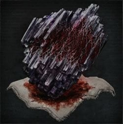

Blood Rock |
||||
|---|---|---|---|---|
|  | ||||
|
||||
Blood Rock is an upgrade Item in Bloodborne.
Blood Rock Usage
- Used to Fortify weapons to +10.
Location
- The main game contains one Blood Rock per NG cycle. It is found near Nightmare of Mensis: Middle Loft.
- A total of three others can also found in sarcophagus chests depth 5 root chalice dungeons (One in each type; Pthumeru, Loran, and Isz)
- There is also a chance of one dropping from the final boss of any depth 5 root chalice dungeon.
- With the addition of The Old Hunters, there is one more Blood Rock in the Fishing Hamlet. Down the elevator leading to the boss, go into the large room opposite to the tunnel guarded by 2 Winter Lanterns and at the other side (through many snail women) you'll find the Blood Rock. The way to the Blood Rock from Lighthouse Hut lamp is shown .
- After Patch 1.09 you can buy Blood Rocks from the Insight Shop in Hunter's Dream after beating Mergo's Wet Nurse. One Blood Rock costs 60 Insight.
How to get blood rock in Nightmare of Mensis:
1. Without Killing the Brain of Mensis
To get to this item easily and painlessly it is recommended that you return to the dream and spend all your insight. After that apply the Deep Sea rune for frenzy res, and wear your best frenzy res armor. Make sure you also have plenty of sedatives. Then spawn at the Mensis: Middle Loft lantern after killing Micolash, Host of the Nightmare, head outside, up 2 flights of stairs, and get into the bird cage elevator. During descent, there is a window you can jump into from the elevator (see video below).
From this point, run across the bridge with the 3 Winter Lanterns using the skull-rocks to avoid Frenzy. Run past the spiders, descend the stairs (careful in this room there is a hole in the floor which you can fall through earlier than wanted,) pull the lever on the balcony, this will trigger a cut-scene showing the Brain of Mensis drop into the abyss. After the cut-scene, turn around and drop down into a hole on your right. After dropping down the hole, run outside, collect all the items, drop down into the collapsed tower on the bridge (avoiding the bottomless pit in the center of the room) and there is a body holding the item.
Note: The Brain of Mensis is the creature causing Frenzy in the entire Nightmare of Mensis area, so the 'Killing the Brain of Mensis' option below is high-risk and should be avoided. Pulling the lever in this option allows players to get Blood Rock with no risk of Frenzy aside from the Winter Lanterns, and drops the Brain of Mensis into a abyssal pit where it can be killed without inducing frenzy. This also allows players to get the Tier 3 Moon rune.
2. Killing the Brain of Mensis
After killing Micolash, Host of the Nightmare, use the Iron Door Key to open the door located on the left side of the wall at the beginning of the boss fight. The door will open onto a bridge with numerous Insight items, and lead to a collapsed structure. Drop down into the collapsed structure to find the Brain of Mensis and a body holding the item.
IMPORTANT: Killing the Brain of Mensis this way will prevent one from obtaining the Tier 3 Moon Rune from her via the 'Make Contact' gesture in the abyss. You will, however, still get the Living String required for the Great Pthumeru Ihyll Chalice.
By making contact and getting the Moon rune then killing the brain, you can get both the rune and the Living String.
Blood Rocks in Chalice Dungeons
This item is also available in high-level Chalice Dungeons such as Isz Root Chalice or Lower Loran Root Chalice. It is a low drop-rate, so make sure you have high Discovery, which can be increased either by adding points to the Arcane stat or using certain runes.
The community has shared a few glyphs that contain blood rocks. Big thank you's to those who created and shared these chalices!
- 1 Blood Rock available per Chalice type: Pthumeru, Loran and Isz (NOT Hintertomb)
- Great One's Wisdom will replace Blood Rocks, (just like runes), if already obtained in that Chalice type.
- This limitation does not reset upon entering NG+(+).
- Rumored to reset upon some trigger, or through PvP victories, but none confirmed.
- Blood Rocks can also be obtained by defeating Depth 5 Chalice Dungeon bosses.
Pthumeru Chalice Blood Rocks
- Pthumeru Ihyll: Glyph: jrwffkyp. Just after Chamber of the Seal, before main area. In the first pre-area. Beware of fatty.
- Pthumeru Ihyll Root Chalice (Cursed Fetid Rotten): zziz2qbx. Layer 2 (pre-area before the boss room).
- Sinister Pthumeru Ihyll Root Chalice: Glyph: u6d8itwm.
- Sinister Pthumeru Ihyll Root Chalice: Glyph: hdmg5dzw. Defeat the layer 3 boss. (Pthumerian Descendant) Also had highest tier "Eye" rune equipped.
Loran Chalice Blood Rocks
- Rotted Lower Loran Chalice: Glyph 4292egu2, Layer 2 (In pre-area before second lantern). (I found this to be incorrect, it is in on Layer 1 in the pre-area between the Chamber of the Seal and Layer 1 lamps, in the sewer section in a sarcophagus protected by a madman)
- Fetid Lower Loran Chalice: Glyph 7guktqyg, Layer 1 (In the side area before the boss room).
- Lower Loran Chalice: Glyph 6rxwxu3e, Layer 1 (1st bonus door, does not require offerings).
- Rotted Lower Loran Chalice: Glyph gysprnag, Layer 3 upon beating the Aborrant Beast Boss.
- Sinister Lower Loran Root Chalice: Glyph v77hfp2e, Layer 1 pre-lamp. (Sinister offering)
- Fetid Rotted Lower Loran Root Chalice: Glyph xf9deybn, Layer 1, side area before the boss room.
- Fetid Rotted Cursed Lower Loran Chalice: Glyph g5pkmkua, Layer 1 pre-lamp
Isz Chalice Blood Rocks
- Isz Root Chalice Glyph rr4jfbys, layer 3. Located through the bonus room past the boss gate.
- Isz Root Chalice: Glyph fsieuy9x, layer 3.
- Isz Root Chalice: Glyph wbgypzky, layer 1. The blood rock is in the very first forked path, before the second lantern. A very straightforward path, there's a regular zombie, some spiders and a brainsucker on the way to it.
- Isz Root Chalice: Glyph s626p982, layer 1. Fetid Rotted Cursed. In the bonus room past the boss gate. The chest room has a tomb prospector hunter, a brainsucker, and a horde of celestial children.
- Isz Root Chalice: Glyph gftbrfx6, layer 3; 2 blood rocks. 1st : chest in a bonus room before the boss. 2nd : for killing the boss; the Pthumerian Elder.
- Isz Root Chalice: Glyph xdsyzmp6, Layer 2.
- Isz Root Chalice: Glyph h6panx99, layer 3 . Fetid Rotted Cursed. Pre-Lamp side area.
Videos
Notes
- Blood Rocks found in Chalice Dungeons seem to have a reset trigger (has yet to be confirmed, possibly after a certain time has passed?). It has been claimed you can get a second from Chalice Dungeons if someone shares the Glyph of a dungeon containing it but this is yet to be confirmed.
Trivia
- ??
 Anonymous
AnonymousSinister Pthumeru Ihyll root chalice
glyph: bej77ini
I got a blood rock drop from the Watchdog boss in layer 3 (Eye equipped)
Also a good dungeon for blood chunks (all the bosses can drop chunks)
- Anonymous
- Anonymous
- Anonymous
"Look for video below" it says. There is no video below at least on mobile
- Anonymous
- Anonymous
Sinister pthumeru ihyll n39answs sarcophagus chest in 2nd bonus area (after lock). Beware of fatty.
- Anonymous
Loran Chalice Blood Rocks
Rotted Lower Loran Chalice: Glyph 4292egu2, Layer 2 (In pre-area before second lantern). (I found this to be incorrect, it is in on Layer 1 in the pre-area between the Chamber of the Seal and Layer 1 lamps, in the sewer section in a sarcophagus protected by a madman)
This is close, however the actual location is layer 1 pre-boss bonus room. The coffin protected by a madman (labrynth sage) is correct
- Anonymous
Isz root chalice dungeon no rites
d6887rts
Blood rock in Layer one pre area, chest
I advise completing the dungeon, tons of loot including: red jelly, tier 5 tomb mould, and ritual blood, lost threaded cane, bastard of loran, pearl slugs. Plus it has neat stuff like undead giant wandering bosses, chest placed jn front of each other and more
- Anonymous
After getting my first blood rock from a chalice, 2 days later i went back to that same glyph and got a great ones wisdom. Went to a different glyph and got another great ones wisdom...
- Anonymous
Cursed pthumeru f/r/c Layer 1 pre lamp area guarded by a naked fatty
- Anonymous
A good tip for solo'ing most Depth 5 Chalice Dungeons around Blood Levels 100-120 ( Max out Vitality upto 50 for a solid 1500HP with your Hunter... Then make sure to Equip those 3 Runes & 1 Caryll Rune for a good Survivability specialy doing Depth 5's alone ). First equip Communion +4 Blood Vials for a total 24 Blood Vials with your hunter , 2nd Rune should always be the Great Lake Rune for that "+4% All Damage Eeduction" it might not seem alot , but this Rune does save you from getting 1 Shotted all the time... The Final 3rd Rune should be your personal prefference. ( Either go with Clock-Wise Meta for that 10% HP increase , or definitely go with the Lake Rune for an increased "+3% Physical Damage Reduction" with the Great Lake Rune you should have more than 300+ Physical Defense ( This could easily make out for being 1 shotted all the time , with a total of 24 Blood Vials or 25 Blood Vials , you could Solo any Depth 5 Chalice Dunegons specialy the Root Chalices Depth 5's ). The Caryll Rune i always go with Hunter Mark for that "Stamina Recovery Speed +UP" . Good luck Hoonting.
- Anonymous
There's also a good chance getting Blood Stone Chunks in any Bosses with Depth 5 Normal Chalices... Pthemura , Loran & Isz ( Blood Rocks can also be dropped by the Final Bosses of each normal Depth 5 Dungeons ). It's also depends in Luck sometimes you can get the Blood Rock by killing Celestial Emissary during the normal Isz Chalice Depth 5 , even before Ebrietas Final Boss ( The Depth 5 normal dungeons are pretty tough aswell , i'm level 132 yet i can still get 2 Shotted ). Goodluck , in Lower Loran Root Chalice the final boss could also drop Blood Rock ( After getting those Rocks you will get instead Great One's Wisdom ). And also 1st or 2nd Layer Bosses will drop some Chunks , and sometimes with possible High Luck/Discovery you could get Blood Rocks from even the Boss before the Last Layer.... Try finishing up the normal game playthrough , then go grind in Chalices Depth 4 & 5 for more Chunks & Blood Rocks before hitting NG+ for a good start up.... Plus Chalices do also give many Insight fighting Bosses . ( This could also help buying another Blood Rock from the Insight Messenger Bath for 60 Insight after the 1st time getting it when killing Mergo's Wet Nurse ). I also saw most Depth 4 & 5 Chalices to provide you with Madman's Knowledges aside from the ones you get out of the Dungeons like in the Story Playthrough Bosses & Such... Goodluck
- Anonymous
Also Cursed Isz W9wc2fwy - first prelamp bonus area easy, quick chest.
- Anonymous
You can pull the lever, drop the brain of Mensis down, go down an elevator into the abyss and then make contact with it there too.
- Anonymous
9fvuy2us ihyll dungeon. Found a blood rock in the first room layer 1. Spawn in, take the first door on the left, go straight across through the gate, next room is pitch black with a floor that will crumble on you, then next room has the sage enemy and the chest with the blood rock. Happy hoonting
- Anonymous
3nawt3ys Isz at the very start pick left door there is a big bonus room with a sucker you can sneak and do a backstab to him , rock in the coffin!
- Anonymous
- Anonymous
Found one on pthumeru Ihyll root chalice first room after lamppost glyph: rieqfcys, it's in a sarcophagus guarded by a labyrinth sage and about 7 spiders.
- Anonymous
Blood rock in 1st layer FRC lower loran root. Glyph is 3j7g37d5 and is located at pre-boss bonus area right after the locked down.
- Anonymous
When you just randomly join some guys dungeon via the search, it's a whatever the first pthmeru root is, depth one, and everything one shots you, are worth thousands os echoes, and there's a blood rock in a chest... bet they hacked that... I just started this playthrough lol, I'm only at +6 weapons...
- Anonymous
I got one from Ebrietas in standard Isz chalice. So it's not just from root chalices.
You absolutely can get the rune after killing the brain. It's more difficult because you no longer know exactly where you have to stand, but you can use notes left on the ground by other players to get a good indication of where to stand. Do the "make contact" gesture like you're supposed to in the right spot and you'll get the rune even after the brain is dead and gone.
- Anonymous
I found a blood rock in a dungeon I made on floor 3 in the treasure room on the way to the boss. The glyph is ykq7uqzu
- Anonymous
Maybe put an asterisk or something when giving IMPORTANT Info? Or put the IMPORTANT part UNDER the description which would prevent one obtaining whatever (in this case THE MOON RUNE!!!) Grr.
- Anonymous
I was Lucky I guess, my Arcane is lower 15. I better start leveling up.
- Anonymous
Glyph 5pwujscd – earned a total of TWO Blood Rocks from both bosses Ebrietas (Level 3) and Amygdala (Level 4)!
- Anonymous
So I just got 2 bloodrocks for ailing loran chalice type I read here it’s only suppose to be one? Maybe I’m just lucky as rest of the glyphs are now giving mad ones wisdom.
- Anonymous
I found a Blood rock in the Pre-boss room on layer 1 Glyph: ubxrts3t
I scoured all three Bloodborne wikis as well as Reddit for glyphs and the details about those glyphs. Then I checked every single one of them to see if they were still active, some of them twice just to make sure they were really dead. This is what I came up with; the fastest paths to all the Runes and Lost / Uncanny weapons as well as all the gem farming glyphs that are still active. Enjoy! docs.google.com/spreadsheets/d/1O8N7xnoSS935oL6eqfqDngmK0bUqqYpy1Ytoc5_cwwQ
- Anonymous
Isz gravestone
Glyph: zpqgr7ew
There's a bloodrock in the preboss area in the second layer
- Anonymous
In Lower Loran root (no additional rite) layer 1
Glyph: jern5nsb
There was also something in layer 2, but i forgot if it was a rune or a weapon.
>1. Without >Killing the Brain >of Mensis
What do you mean by start by "spending all your insight"? High insight just makes the game more difficult with frenzy, right?
Pthumeru depth 5
Glyph:8yasb9is in layer 3
In coffin guarded be kepper of the old lords
- Anonymous
kinda hilarious i got it from depth 5 celestial emissary, was hoping for the challenging ebrietas but nope, big blue blunder drops his rock.
- Anonymous
Moar Blood Rocks! Rotted Isz, Glyph: xsewnsuu
In the bonus area before 1st boss, not much resistance along the way. Just stay on the top floor.
- Anonymous
I don't know what causes it to trigger but the blood rock keeps popping back up in my game with the insight bath messengers I've bought a few of them all in the same playthrough
Rock in Isz Root: Before the dungeon actually begins, first side hallway before actually entering the dungeon. Only enemies are 5 blobheads, a witch of hemwick, and a brainsucker.
Glyph: 9cf2uxuy
- Anonymous
Blood Stone Rock: Sinister Lower Loran - Second Layer Chest
Glyph: r9b8x8nc
- Anonymous
I've killed the wet nurse but no blood rock in shop? why is that?
- Anonymous
- Anonymous
This is a BS list, the first Ithyll chalice gets you a great ones wisdom, not a blood rock. I know for sure because i had to fight the fatty
- Anonymous
Someone told me there was 5 BloodRocks in each play through.
I just got the one from Mensis, and the one from Hunter's Nightmare. (those are 2)
I got one from defeating Ebrietas in Level 3 Root Isz Chalice (making 3)
And just got another three from the glyphs in this webpage.
I'm absolutely sure that I got 6 blood rocks this time. Seems like you can farm Blood Rocks from Ebrietas in Level 3 Isz Root Chalice. Can't tell the drop rate, though.
- Anonymous
I got one from Ebrietas in a non-root Isz Chalice (the one she drops after beating her in the main game the first time). I've also seen videos of people getting Rocks from Loran Darkbeast in Lower Loran, Layer 3.
- Anonymous
53zbtyf6 final boss is Erbiatas and got me a blood rock as well as triangular abyssal arcane gem. Still open give it a shot
- Anonymous
- Anonymous
Pthumeru Ihyll Root ChaliceGlyph: 9vb3tzzaLayer 3 (pre-area before the boss room).
- Anonymous
Pthumeru Ihyll Root ChaliceGlyph: 9vb3tzzaLayer 2 (pre-area before the boss room).
- Anonymous
If anyone is wondering where Mother Brain falls to, take the non-cage elevator from the base lamp, then move past the creepy children and fat guy. There'll be a pretty obvious elevator there, taking you down to the (completely dark) floor. There you will find Mother Brain and you can kill it, it won't fight back. It drops a Living String (with interesting lore attached, it claims Mother Brain is a Great One)
- Anonymous
Made a vid that shows where to find it and how to kill it with the lever: https://youtu.be/FKDl6ncAxoY
- Anonymous
3 singing brain things, and there are 4 stooge-faced spiders in a room at the end of the bridge. The lever is past the spider room.
- Anonymous
You can run by all of the singing women. I personally think they were way too annoying to fight due to the frenzy + their dumb grab.
- Anonymous
1. Obtain "Make Contact" gesture 2.Get on the elevator with the busted cage and jump through the window 3. Pull Lever on Brain (doesn't kill it) 4.Head to room with sink holes (with the 2 armored fat guys and little men) 5.There now should be a elevator there in the middle. Enter it and it will take you below ground. 6.Do not kill the Brain, walk up to it and use "Make Contact" gesture. 7.Drops Living String when killed. May need Mensis Cage. Other attire NOT required.
- Anonymous
So should I first pull the lever and then use "make contact" in the dungeon?
- Anonymous
I did a lot of high level dungeons (pthumeru-Ihyll and so on) and didn't found a single piece of a rock.
- Anonymous
- Anonymous
e8cys66n glyph, the first door. Be careful with floor, there are lots of traps.
wbgypzky - Sinister Isz Root
The blood rock is in the very first forked path, before the second lantern. A very straightforward path, there's a regular zombie, some spiders and a brainsucker on the way to it.
(I would edit it right into the page, but this wiki engine is a piece of *****.)
- Anonymous
- Anonymous
This could not be any more unclear or misleading. What is the "start" of the fight? Which stage of the "fight" are we referring to?
- Anonymous
To my understanding: Blood Rocks have a chance to appear inside treasure coffins. Does resetting/rerolling a dungeon (pull the chalice off, spend materials to reuse same chalice, different seed) also give another chance to have another shot at a Blood Rock in a coffin/chest?
- Anonymous
doing random chalice dungeon search found this one, 4292egu2, from spawn start first door on right quick and easy enjoy
- Anonymous
I am on NG++ and have received a blood rock all 3 times at the nightmare of mensis location.
- Anonymous
How do you actually create the Rotted Lower Loran Chalice dungeon? How do you get the chalice in the first place? I have the Lower Loran Chalice already, but it won't let me create a rotted version to allow me to create another chalice dungeon to get the Blood Rock. Can anyone help? That is the last Blood Rock I can get this run through, and I want to get all of the in each playthrough.
- Anonymous
Please mention that in the rotted lower loran also rerequires a fetit offering. Because after I made the rotted offering is till did not meet the requirements
- Anonymous
Great phtumeru ihyll root, with rotten and foetid. The rock is in the bonus area in a gold chest, the area is through a door just before the layer 2 boss fight and you dont find the rock instantly, its a bit of a trek. Glyph is 9v7p9gd2. PS. to be able to access a chalice like this, or any other, i think you have to complete it first on your own before you can search for a glyph of the chalice. That might be why you're having trouble :)
- Anonymous
Isz Root Chalice:Glyph wbgypzky worked for me, however the fsieuy9x Layer 3 one only contained a Great Wisdom :( (Assuming its the branch-off way right before the Layer 3 Lamp) Rest of the mentioned ones aren't found anymore or I don't meet the requirements.
- Anonymous
Today I created an Isz dungeon with four layers. After defeating the layer 4 boss I got a Rock as reward
- Anonymous
Ehy you awesome dudes! I've got a question! :O Is it possible to farm more stones by playing multiple times every Pthu/Isz/Loran chalices, searching them via ghyphs? :O
- Anonymous
just found one in this Isz root chalice with Fetid offer, is in Layer3, in the "secret" area after you unlock the boss door 5zhfbe5d
- Anonymous
Okay, you can only get 1 Blood Rock per playthrough and 3 additional Blood Rocks from Chalice Dungeons. One from Nightmare Mensis: Middle Loft and 3 from Chalice Dungeons (Pthumeru Ihyll , Lower Loran , Isz , 1 per Area). Once you obtained 1 Blood Rock from one of the Chalice Dungeons (Pthumeru Ihyll , Lower Loran , Isz , 1 per Area), you can not obtain another Blood Rock by either re-rolling or doing a shared Chalice Dungeons (Pthumeru Ihyll , Lower Loran , Isz , 1 per Area) again. The Fifth Blood Rock I just got from a Depth 5 Layer 4 Pthumeru Root Chalice after defeated the final Boss Pthumerian Elder. Note: Violence Past Level 250/Vit 99/End 40//Stg 40/Arcane 60
- Anonymous
- Anonymous
Rotted Isz, depth 5, layer 1 pre-dungeon. Chalice Glyph: f8qubzbt.
- Anonymous
I spent a good while today after obtaining the Ihyll Chalice trying to get the Blood Rock. Wondering how much item discovery I actually would need for it to pop up. I tried using the same glyphs several times to see when it would spawn and also tried some searched ones to no effect.
I've made the Pthumeru Ihyll dungeon but the code jrwffkyp doesn't let me make it it says I don't meet the reqs, is it root or regular?
I invaded someone's Isz Chalice dungeon, and tried to run for some blood rocks (after i killed the host). I found 2 Blood rocks: First one in layer two, inside a chest Second one in layer 3, after defeating the boss. Chalice glyph: 34n953n5 Depht: 5 Layers: 4
- Anonymous
I did not create this chalice just did a quick search while tooling around the other day. This is my 5th Blood Rock with 4 coming from the Chalice Dungeons. What was surprising is that this was my second from Loran and of all things it was a drop from an Abhorrent Beast?!?! AB is the layer 3 boss. So, it's Sinister Lower Loran- Glyph: skxtfpux - Conductor: Aleksander. I also got a 3rd Anti-Clockwise Metamorphosis rune in a layer 2 sarcophagus. Happy Hunting!
- Anonymous
YES - A BLOODROCK FROM STANDARD VERSION "Great Isz Chalice" Ebrietas. Was such an epic reward for an epic finish (this is my last Chalice Dungeon). Here is a vid (skip to the end): https://youtu.be/bgAL3oKk2po Here is my glyph: be27m57y Not sure if it can help, might be a random drop. I had 100 discovery only and when I saw the Blood Rock I was ecstatic!
- Anonymous
I got 1 blood rock from the side dungeon before the first layer lamp (after defeating a rolling watcher) and a second one after defeating the layer 4 boss (blood-letting beast). Other loots include the Lost Blade of Mercy and the ring of Betrothal. If anyone is interested the glyph is the following: vhz5fjcv Enjoy!
- Anonymous
I can also confirm blood rocks drop from bosses in chalice dungeons. I just had it happen seconds ago. I'll keep testing since I want more blood rocks anyway. I was in a cursed and rotted (not fetid as I did not have enough materials for that as well when I made this particular dungeon) Pthumeru Ihyll. It was dropped from a Bloodletting Beast that did have it's head on the third layer. I'd share the chalice, not that it really means much considering it's probably a random drop chance, but I'm out of PSPlus membership. Also, if it matters to anyone, my arcane is at 50 with 209 discovery. I also had 22-23 insight, although I don't really think that affects drop chance. I'm gonna keep doing dungeons, I'm trying to +10 all the weapons in the game, more or less. So I'll come back and edit this or post on it if I get anymore rocks.
Blood rocks in these chalice dungeon glyphs 6h4rn5m8 w83dfw9w kjcdx824 fg7af3bu sorry but can't remember where!
- Anonymous
I got 1 rock frm defeat ebrietas in layer 3 in the standard Isz chalice. Glyph 6fbxqzeg. another frm the isz root chalice glyph wbgypzky in the wiki. Also i have 50 arcane so high discovery
- Anonymous
- Anonymous
Hey, I`ve just created a lower Loran root chalice with foetid and rotten offering but with no curse ( had no bastards left). But I stumpled upon a nice solid blood rock right past the chamber of the seal ( so even before the first layer). Before facing the boss of the 1st layer, there you may also find a treasure room that contains the "Lost beast claws". Could be helpful for lower lvl caracters for they dont have to face any boss and there`s also no curse. (but a lot of witches) I ll leave that one open for you fellow dungeon dwellers, but the rest of the dungeon isn t worth your time at least I only found nothing but ritual materials after the 1st layer. Chalyce Glyph: " j j n v e y q s " Creator: Garl Vinland Layers: 3 Bosses: Keeper of the Old Lords Beast-possessed Soul Amygdala ( as I said not worth killing any bosses, cause there are no special rewards in lower layers)
- Anonymous
Can you only get one from the boss at the END of the chalice dungeon, or ANY boss within the dungeon? Also, can the one you get from bosses be obtained more than once, unlike the ones from chests?
- Anonymous
From Isz Root Chalice:Glyph wbgypzky (the one listed above) just got the Rock in the 1st layer as stated in the guide, yet I got *another* killing Ebrietas (3rd boss)
- Anonymous
Chalice Glyph: 2k9bp6py Found in side room on the first floor in the boss door hallway, guarded by rats and a grey fatty with a gun
- Anonymous
Can anyone tell me, if it´s possible to pick blood rocks in offline mode, because I´ve already finished Phrtumeru and Lower Loran Root chalices depht 5 and I´m pretty sure that I´ve looked every single place, and I couldn´t find any of thoses Blood Rocks.
- Anonymous
You can buy it for 60 insight, but you have to have at least one in your inventory. Same goes for chunks.
- Anonymous
I've gotten 5 Blood Rocks in a single playthrough. 1 in the Nightmare of Mensis, and 4 in chalice dungeons. However, all of the Blood Rocks that I got in Chalice Dungeons were from killing bosses, not from finding them in a sarcophagus. Is it safe to assume that you can farm unlimited Blood Rocks from killing depth 5 bosses, albeit they're extremely rare?
- Anonymous
Confirmed Easy Layer 1 Blood Rocks: - Lower Loran Root: Cursed+Fetid, 6krqjavr, first bonus room in layer 1. - Great Isz (non-root): no rites, rpzkeauc, first bonus room in layer 1. - Pthumeru Ihyll Root: no rites, jrwffkyp, first bonus room in layer 1. I believe you can only get one blood rock per Depth 5 chalice type for a total of 3 (ever, regardless of NG cycle). You can get an additional 1 blood rock per NG cycle from the Nightmare of Mensis. Disclaimer: I did not create these glyphs, so credit goes to the creator of those glyphs, which you'll see when you search for it in the game.
- Anonymous
So if I'm in NG+, that mean I can buy the blood rock from the shop??
- Anonymous
75enxm86 Layer 1, first optional area in a bloodsucker guarded chest on the lower floor.
- Anonymous
Taking the Lighthouse Lamp, go down the elevator and head towards the part of the cave with the brain ladies in it. You will have two directions, take the right path and continue until you eventually reach a small set of stairs. Blood rock is on a corpse.
- Anonymous
If I've already obtained a blood rock from a chalice and then create another one of the same kind and find a Great One's Wisdom, is it fair to assume that it would have been a blood rock? If so then its really really easy to get to in the pre boss bonus room on layer 1. Glyph htvwz464 if someone wants to check it out
- Anonymous
Isz F/R/C : h54a9b6b first treasure room (pre-L1) after the bridge, chest guarded by a brainsucker contains the Blood rock
Glyph 6rxwxu3e, Layer 1 (1st bonus door). Still works. Ty all.
- Anonymous

POSSIBILE GLITCH
Se prima del boss finale del calice :bej77ini si disattiva la rete internet e si rientra nel gioco, si ritorna nel labirinto in off line e si uccide il boss in off line con la runa occhio 3 (aumenta la scoperta di oggetti rari e non rari + comuni) il boss lascia cadere una roccia di sangue o almeno io ne ho ricevute 3 di fila...
0
+10
-1